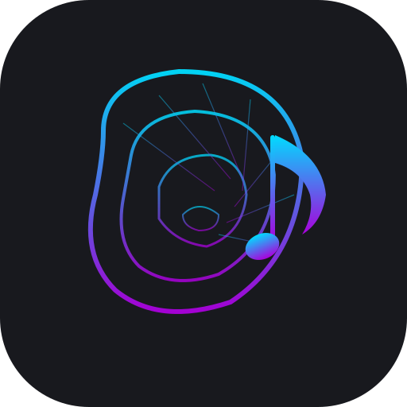

Nemo
Fretboard & Ear Training
Tre strade per cominciare. Puoi sempre cambiare dopo.
s
ø
lo
Drill rapidi · trova note, gradi, scale e accordi sul manico.
s
ø
lve
Ear training cieco · suono accordi, tu trovi le note.
e
ar
Riconoscimento intervalli · trick mode su intervalli simili.
Esplora da solo →
Nemo
0 XP
0
🥉 Bronze
0/50
v44
✕
⚙
s
ø
lo
s
ø
lve
e
ar
t
u
ne
Lab ↗
🧪
Focus
⛶
Manico
🎸
Custom
≣
Vista
📱
Full
⛶
EN
Tema
☀
Vista
🎸 Pratica
📖 Apprendi
🧠 Teoria
🗺️ Percorso
🎵 Brani
📊 Stats
◀
Tonica:
C
▶
◀
Standard
▶
Mic
◀
I-IV-V-I
▶
◀
Triade
▶
◀
Qualsiasi
▶
◀
Maggiore
▶
◀
Asc
▶
◀
Maj7
▶
⌃
Seleziona una tonica e premi
Start
per iniziare.
Spazio: Start/Stop · F: Focus · H: Hint · → : Skip · P: Pause · V: Vista
+0 XP
Pausa
0
Corrette
0
Totali
—
Accuracy
00:00
Tempo
Riprendi (ESC)
FASE 0
—
—
15
Prompt
50
XP
90%
Soglia
Annulla
Inizia
Lezione completata!
+0 XP
0
Corrette
0
Totali
—
Accuracy
00:00
Tempo
Chiudi
Prossima lezione